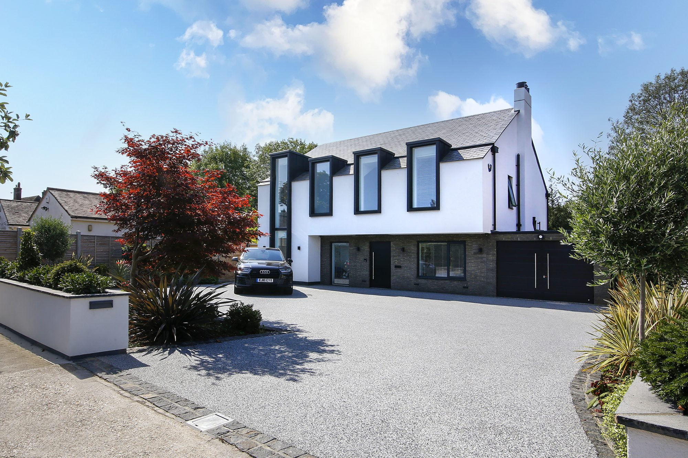

It’s one of the first questions homeowners ask: “Will I need planning permission to replace my driveway?” The good news is that for most resin bound driveway installations, the answer is no.
The Permitted Development Rule
In England, the key regulation is the Town and Country Planning (General Permitted Development) Order 2015. Under this order, you can pave or resurface your front garden without planning permission if:
- The new surface is permeable (water drains through it), or
- Rainwater from an impermeable surface is directed to a permeable area within your property (such as a lawn or garden bed)
Resin bound surfacing is fully permeable by design. Water passes straight through the tiny gaps between the aggregate stones and into the sub-base below. This makes it automatically SuDS-compliant (Sustainable Drainage Systems) and qualifies as permitted development in almost all cases.
When You Might Need Permission
There are a few situations where you would need to apply:
Listed buildings
If your home is a listed building, any changes to the external appearance — including the driveway — may require listed building consent in addition to planning permission. Your local conservation officer can advise.
Conservation areas
Properties in conservation areas sometimes have additional restrictions on materials and finishes. Resin bound is usually acceptable because of its natural stone appearance, but check with your local authority first.
Flats and shared access
Permitted development rights apply to houses, not flats. If you share a driveway with other properties, or the land is communal, you’ll likely need permission.
Very large areas
If paving more than 5 square metres at the front of your property with an impermeable surface, you need permission. This doesn’t apply to resin bound because it’s permeable, but it’s worth knowing.
What About Resin Bonded?
This is where the difference matters. Resin bonded surfaces are not permeable — the resin layer underneath blocks water. If you’re installing resin bonded on your front driveway and the area exceeds 5m², you will need planning permission unless you provide alternative drainage to a permeable area.
Wales-Specific Rules
Since we’re based in Penyffordd and serve both Cheshire and North Wales, it’s worth noting that Wales has its own permitted development rules under the Town and Country Planning (General Permitted Development) (Amendment) (Wales) Order. The principles are similar — permeable surfaces are generally permitted — but the specific thresholds can differ. We always check the applicable rules for your property.
How We Handle It at ResinPro
During your free survey, we assess not just the driveway itself but the planning situation. If there’s any doubt about whether permission is needed, we’ll tell you upfront and advise on next steps before any work begins.
In our experience across over 100 installations in Cheshire and North Wales, the vast majority of domestic resin bound driveways fall comfortably within permitted development rights.
Quick Checklist
- Is the surface permeable? Resin bound = yes. No permission needed in most cases.
- Is your property listed? Contact your local conservation officer.
- Are you in a conservation area? Check with your local planning authority.
- Is the property a flat or shared access? You’ll likely need permission.
- Still unsure? Ask us during your free survey — we deal with this every week.